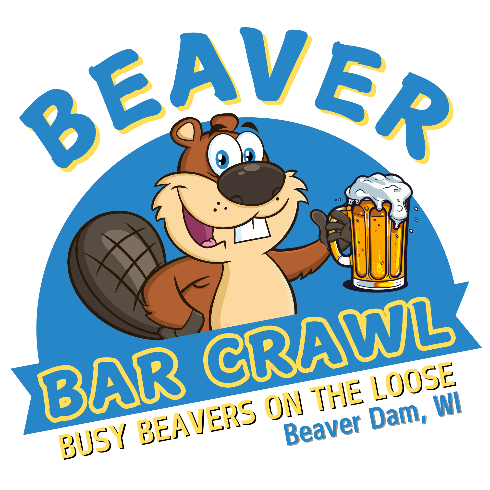
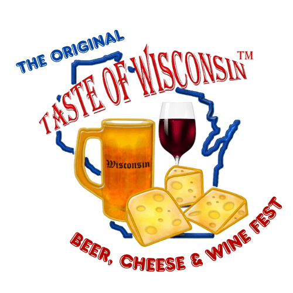

The signature events the chamber runs every year — plus member events that are open to the public. Full calendar below.

A guided crawl through downtown member establishments. T-shirts included. Always sells out.

"Vehicle and phone data" with TNT Investigative Services. Coffee, breakfast, and a smart talk.

Drinks, name tags, real conversation. The most relaxed networking on the calendar.
A three-day festival of art, music, and the peonies our town is famous for. Bring the family.

Beer, cheese, and wine fest. 25+ Wisconsin makers in one Saturday afternoon — the year's headline event.
A long-standing Beaver Dam tradition. Foursomes, sponsorships, and the friendliest scramble in the state.
Member events, city events, and chamber events — posted by their organizers through Membo. Filter by date, category, or audience. Browse a month at a time or skim a list.
Chamber members post events directly through the member portal. Non-members can email us and we'll add it to the community calendar at no charge if it's open to the public.
If you're driving in for one of the festivals — stop in at the Visitor Center first. We'll help you build the rest of the day.